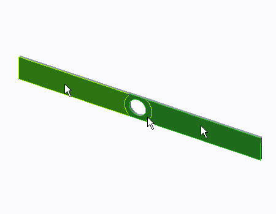
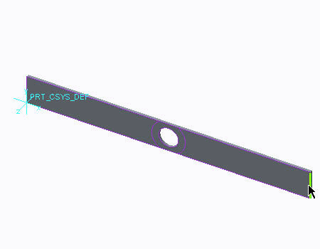
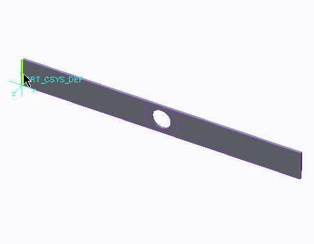
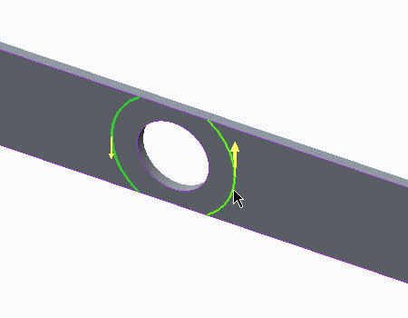

过程: 了解 2D 平面应力
“关闭窗口”(Close Window)
 “拭除未显示的”(Erase Not Displayed)
“拭除未显示的”(Erase Not Displayed) 
 Simulate_Modeling\Stress
Simulate_Modeling\Stress
 PLATE_2DPLANE_STRESS_SIMULATE.PRT
PLATE_2DPLANE_STRESS_SIMULATE.PRT
|
|
||
 |
Creo Parametric 用户打开 PLATE_2DPLANE_STRESS.PRT | |
|
|
||
-
任务 1. 定义 2D 平面应力模型类型。
1. 在功能区中，选择“主页”(Home) 选项卡。
2. 单击“设置”(Set Up) 组中的“模型设置”(Model Setup)
 。“模型设置”(Model Setup) 对话框随即出现。
。“模型设置”(Model Setup) 对话框随即出现。
3. 单击“高级”(Advanced)。
4. 在“类型”(Type) 部分中，选择“2D 平面应力 (薄板)”(2D Plane Stress (Thin Plate))。
5. 在“坐标系”(Coordinate System) 字段中单击，并从模型树中选择 PRT_CSYS_DEF。
6. 在“曲面”(Surfaces) 字段中单击。在模型上，选择显示的曲面。有三个曲面在对话框中列出。
7. 单击“确定”(OK)。
8. 当出现提示时，请单击“确认”(Confirm)。
当您从默认的 3D 模型类型更改为任意 2D 模型类型时，将有一个可视显示。这是选定曲面的着色为洋红色的轮廓。

-
任务 2. 定义 2D 轴对称模型的材料。
1. 在功能区中，选择“主页”(Home) 选项卡。
2. 在“材料”(Material) 组中单击“材料”(Materials)
 。将出现“材料”(Materials) 对话框。
。将出现“材料”(Materials) 对话框。
3. 从材料列表中选择 nylon.mtl，然后单击“添加材料”(Add Material)
 。
。
4. 单击“确定”(OK)。
-
任务 3. 定义壳理想化。
1. 在功能区中，选择“精细模型”(Refine Model) 选项卡。
2. 在“理想化”(Idealizations) 组中单击“壳”(Shell)
 。“壳定义”(Shell Definition) 对话框随即出现。
。“壳定义”(Shell Definition) 对话框随即出现。
3. 完成以下步骤：
- 在“名称”(Name) 字段中键入 Shell1。
- 在“类型”(Type) 下拉列表中选择“简单”(Simple)。
- 在“参考”(References) 部分，选择先前选定的三个曲面。
- 在“属性”(Properties) 部分的“厚度”(Thickness) 字段中键入 1。
- 从“材料”(Material) 下拉列表中选择 NYLON。
4. 单击“确定”(OK)。
-
任务 4. 定义模型的载荷。
1. 在功能区中，选择“主页”(Home) 选项卡。
2. 在“载荷”(Loads) 组中单击“力/力矩载荷”(Force/Moment Load)
 。将出现“力/力矩载荷”(Force/Moment Load) 对话框。
。将出现“力/力矩载荷”(Force/Moment Load) 对话框。
3. 在“参考”(References) 部分中，从下拉列表选择“边/曲线”(Edges/Curves)。在模型上，选择如图所示的边。
4. 在“力”(Force) 部分的 Y 字段中键入 -5。从下拉列表中选择 N/mm。
用于定义“载荷”的选项仅限于力，不包括力矩。那是因为 Creo Simulate 识别出您正在“2D 平面应力”模型类型中工作。
5. 单击“确定”(OK)。
-
任务 5. 定义模型的约束。
1. 在功能区中，选择“主页”(Home) 选项卡。
2. 在“约束”(Constraints) 组中单击“位移”(Displacement)
 。将出现“约束”(Constraint) 对话框。
。将出现“约束”(Constraint) 对话框。
3. 在模型上，选择如图所示的边。
4. 为 X 和 Y 平移单击“固定”(Fixed) 。
5. 单击“确定”(OK)。
-
任务 6. 定义 AutoGEM 控制。
1. 在功能区中，选择“精细模型”(Refine Model) 选项卡。
2. 从 AutoGEM 组中的“AutoGEM 控制”(AutoGEM Control) 下拉菜单中单击“边分布”(Edge Distribution)
 。“边分布控制”(Edge Distribution Control) 对话框随即出现。
。“边分布控制”(Edge Distribution Control) 对话框随即出现。
3. 按住 CTRL 键并在模型中选择体积块区域的边界，如图所示。
4. 在“节点数”(Number of Nodes) 字段中键入 5。
5. 单击“确定”(OK)。
已经为孔的边和水平边添加了额外的“边分布”控制。
-
任务 7. 为模型定义和运行静态分析。
1. 在功能区中，选择“主页”(Home) 选项卡。
2. 在“运行”(Run) 组中单击“分析和研究”(Analyses and Studies)
 。将出现“分析和设计研究”(Analyses and Design Studies) 对话框。
。将出现“分析和设计研究”(Analyses and Design Studies) 对话框。
3. 单击“文件”(File) > “新建静态分析”(New Static)。将出现“静态分析定义”(Static Analysis Definition) 对话框。
4. 完成以下步骤：
- 在“名称”(Name) 字段中键入 plate_2D_plane_stress。
- 选择显示在“约束集/元件”(Constraint Set/Component) 和“载荷集/元件”(Load Set/Component) 部分中的约束集和载荷集。
- 单击“收敛”(Convergence) 选项卡，然后从“方法”(Method) 下拉菜单中单击“多通道自适应”(Multi-Pass Adaptive)。
- 在“收敛百分比”(Percent Convergence) 字段中键入 5。
- 在“多项式阶”(Polynomial Order) 部分的“最小”(Minimum) 字段中键入 1，在“最大”(Maximum) 字段中键入 9。
- 在“收敛于”(Converge on) 部分，选择“测量”(Measures)。
- 选择 “列出测量”(List Measures)
 。将出现“测量”(Measures) 对话框。
。将出现“测量”(Measures) 对话框。
- 按住 CTRL 键并选择下列测量：
- max_disp_mag
- max_disp_x
- max_disp_y
- max_disp_z
- max_prin_mag
- max_stress_prin
- max_stress_vm
- max_stress_xx
- max_stress_xy
- max_stress_xz
- max_stress_yy
- max_stress_yz
- max_stress_zz
- min_stress_prin
- strain_energy
- 在“测量”(Measures) 对话框中，单击“确定”(OK)。
- 单击“输出”(Output) 选项卡。
- 在“出图”(Plot) 部分，在“绘制栅格”(Plotting Grid) 字段中键入 4。
5. 单击“确定”(OK) 返回到“分析和设计研究”(Analyses and Design Studies) 对话框。
6. 单击“配置运行设置”(Configure Run Settings)
 。将出现“运行设置”(Run Settings) 对话框。
。将出现“运行设置”(Run Settings) 对话框。
7. 默认情况下，结果和临时输出目录被设置在工作目录中。两种分析都储存在此位置。单击“确定”(OK)。
8. 在“分析和设计研究”(Analyses and Design Studies) 对话框中选择 plate_2D_plane_stress，然后单击“开始运行”(Start Run)
 。单击“是”(Yes) 以运行交互诊断。
。单击“是”(Yes) 以运行交互诊断。
9. 分析完成后，单击“显示研究状况”(Display Study Status)
 查看汇总报告。
查看汇总报告。
10. 关闭所有对话框并返回到 Creo Simulate 窗口。
过程就此结束。